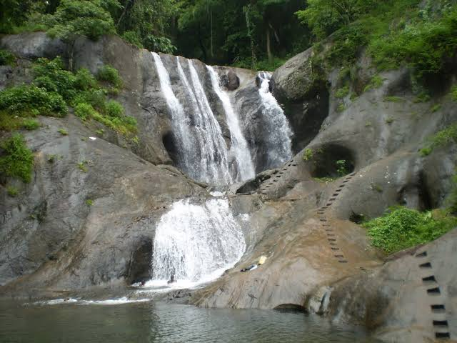

Dreamland of Kerala
Kollam is a city in the state of Kerala, on India's Malabar Coast. It’s known as a trade hub and for its beaches, like lively Kollam and secluded Thirumullavaram. Sardar Vallabhbhai Patel Police Museum has artifacts tracing the history of the police force. Nearby, Ashtamudi Lake is a gateway to the Kerala backwaters, a network of waterways rich with vegetation.
Top Destinations
Jatayu Earths Center
Jatayu Earths Center Incorporates all aspects of tourism, offering a complete God’s own Country experience to each one of you. Spread across 65 acres of land, Jatayu Earth's Center has elegant and mesmerizing elements that lures you for a visit!
Tangasseri Lighthouse
Tangasseri Lighthouse is situated at Tangasseri in Kollam city of the Indian state of Kerala. It is one of the two lighthouses in the Kollam Metropolitan Area and is maintained by the Cochin Directorate General of Lighthouses and Lightships.
Palaruvi waterfalls
Palaruvi waterfalls is the 32nd highest waterfalls in India. Located in the sleepy village of Aryankavu in the district of Kollam, Palaruvi falls is a popular tourist destination. The milky waters cascading down the rocks is an astounding sight that captures the eyes and hearts of the visitors.
Sasthamcotta Lake
Sasthamcotta Lake , also categorized as a wetland, is the largest fresh water lake in Kerala, a state of India on the south of the West Coast. The lake is named after the ancient Sastha temple located on its bank.
The RP Mall
The RP Mall is a shopping mall in the city of Kollam, Kerala, owned by one of the business tycoons in India, B. Ravi Pillai's RP Group. The Mall is located on Kollam's high street. RP Mall was formerly known as K-Mall (Kollam Mall) .RP Mall has about 295,000 sq ft (27,400 m2) of retail space, spread on seven floors.There is a 2,700 sq ft (250 m2) McDonald's restaurant.
Kollam Beach
Kollam Beach , also known as Mahatma Gandhi Beach, is a beach at Kollam city in the Indian state of Kerala. Kollam Beach is the first 'Beach Wedding Destination' in Kerala.

Kumbhavurutty Waterfall
Kumbhavurutty Waterfall is a famous waterfalls in South India situated near Aryankavu panchayath in Kollam district of Kerala near Tamil Nadu border. Located on the eastern area of Kollam District, Kumbhavurutty falls is one among the few crowd pulling waterfalls in Kerala.During peak times, the daily collection of this tourism spot will cross Rs. 1,50,000. It is about 6.5 km away from Achenkovil.
Neendakara
Neendakara is a suburb of Kollam city in Kerala, India.The twin harbours, Neendakara and Shakthikulangara are located here.Trawling ban and withdrawal of the state official start from Neendakara harbour.
Shendurney wildlife sanctuary
Shendurney wildlife sanctuary is a scenic region located in the district of Kollam. The sanctuary is an extension of the Western Ghats. The sanctuary is remarkable for its astounding variety of plant species, amounting to more than 1000, mostly endemic to the region are found here. Numerous endangered animals like the lion tailed macaque and birds like Great Eared Nightjar can be spotted here.
Kottarakkulam Sree Mahaganapathy Kovil
Kottarakkulam Sree Mahaganapathy Kovil , Kollam is a popular temple in Kollam, Kerala, South India. The temple is situated in the centre part of the Kollam corporation, near the Kollam Civil Station.